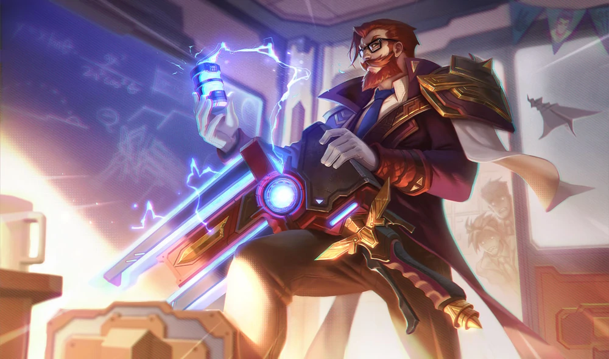
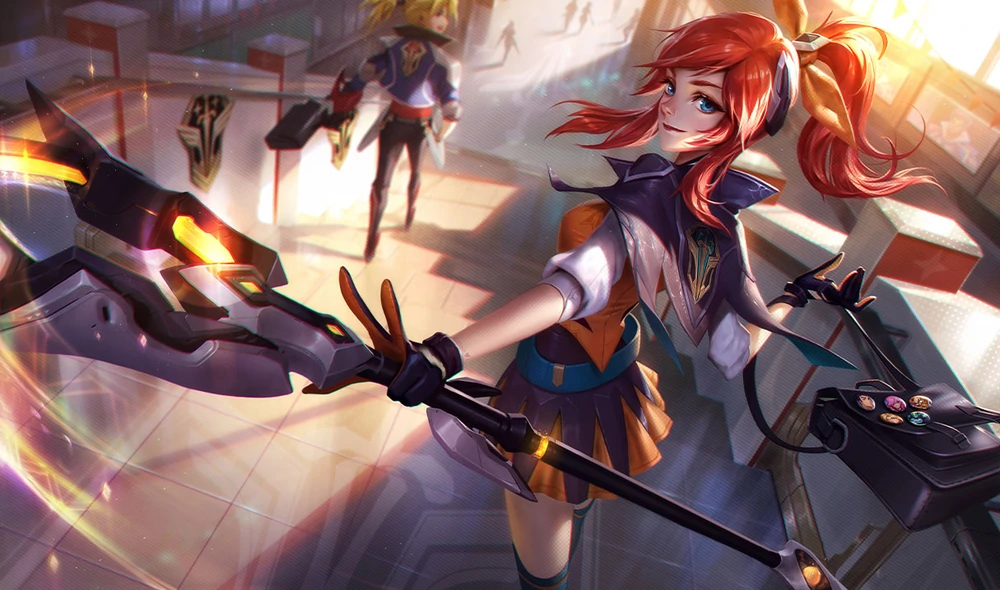
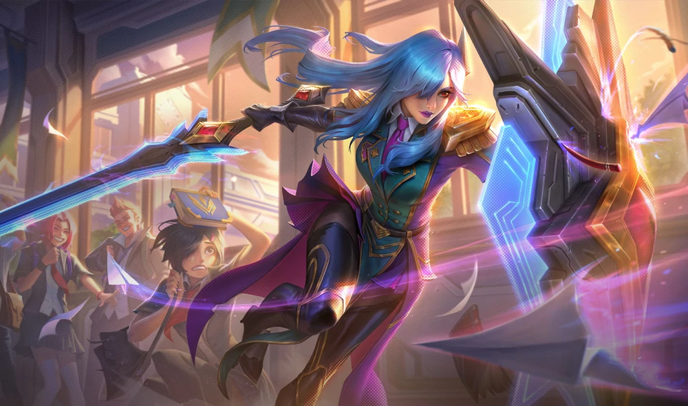
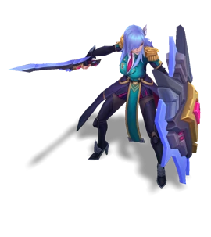
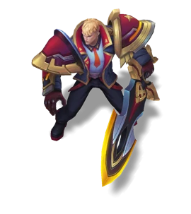

Battle Academia
Battle Academia is a series of alternate future/universe skins in League of Legends.
Set in a world where champions go to school that cultivates the next generation of superheroes.












Battle Academia Ezreal
A young orphan initially thought devoid of any superhuman abilities, Ezreal had resigned himself to a normal life once he graduated middle school. But an encounter with a deadly threat awakened his slumbering potential, and now he finds himself a 1st year at the prestigious Durandal God-Weapon Academy, where he's joined the ragtag Battle Club.Battle Professor Graves
Graves is a salty ex-soldier who served in the Durandal military before he reluctantly became a professor. Following his discovery of something deep behind enemy lines, he received an offer to teach at the Academy from the God-Weapon itself. His hallmark cigar-munching, dispassionate teaching etiquette is a small price to pay for his decades of experience.
Battle Academia Jayce
A prestigious 2nd year whose face is known throughout the wider city of Durandal, Jayce is the class president, head of the world-renowned Luminary Club, and prodigious inventor of miraculous Jayce-branded technologies. He hopes his inventions will prevent the kind of tragedy that struck him in his youth, though he refuses to speak about what that was.
Battle Academia Katarina
Katarina is a rough-edged loner who stays far away from the politics of Durandal Academy. A 2nd year student with a chip on her shoulder, she is also a top member of the Assassin Club—the only club on campus allowed to kill opponents in school-sanctioned duels. Few other students ever dare approach her.Battle Academia Lux
A 1st year at the Durandal God-Weapon Academy, Lux maintains an upbeat attitude no matter the odds. Despite her freshman position in the Sorcery Club, Lux wields a tremendous amount of magical power that even the Academy's senior staff can't quite explain.
Battle Principal Yuumi
Following the disappearance of two principals, Yuumi has stepped in as the acting head of Durandal Academy until either individual can be found and re-instated. As a powerful channeler of magic, she uses the academic registry book as a focus object to generate apocalyptic levels of energy… often while perched on a terrified student's head.
Battle Academia Caitlyn
A feared and respected second year, head of the Luminary Club, and class president of Labrys God-Weapon Academy. Caitlyn enrolled herself in the famously troubled school specifically to whip the delinquents there into prime fighting shape, hoping to one day become the greatest battlefield general in history. With her perfect record, she's not too far off.
Battle Academia Garen
'Brother' to Lux, Garen is the only biological child of his family, but was neglected from an early age as his parents spent all their time developing the god-weapon fragment that would one day become their daughter. As he vented his anger in increasingly delinquent ways, Labrys sought him out for enrollment, where he eventually joined the Battle Club.Battle Academia Leona
An oddly cheery member of Labrys Academy's Battle Club, Leona's dark side comes out in combat, when her motherly, protective persona is utterly replaced by bloodlust. The change is so dramatic that even the most violent students tend to stay on her good side, hoping to avoid her wrath.
Battle Academia Wukong
A consummate troublemaker and prankster, Wukong has failed out of every high school in the region, eventually washing out into Labrys as an 'enrollment of last resort'. A naturally gifted fighter in the Battle Club, he still hasn't learned discipline, and only listens to Caitlyn because she can beat him up.
Battle Academia Yone
Yone is a brooding, quiet member of the Assassin Club, one whose morose and serious attitude belies the colossal chip on his shoulder. The bad blood between him and his brother is well known, and even speaking about it casually has been known to invoke Yone's fury—something Caitlyn has picked up on for her own purposes.